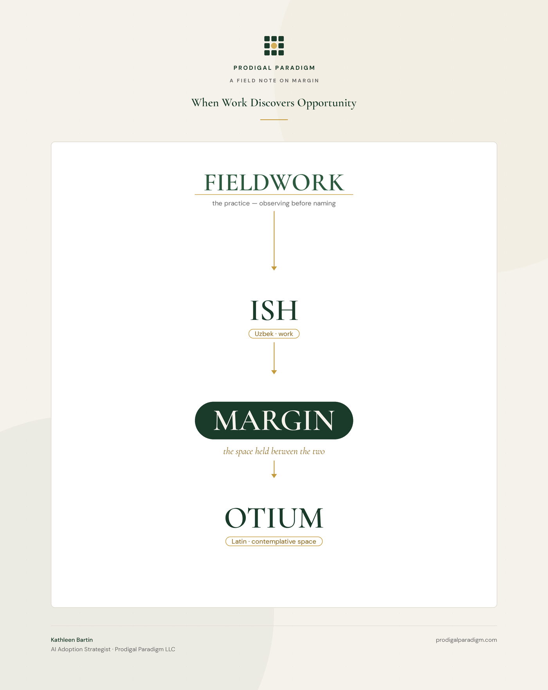

Fieldwork
Ish → Margin → Otium
From the work as it is to the work that matters most: an enablement system in three movements, named in three languages, because English kept using the same word for all of it.

Organizations do not have an AI technology problem. They have an adoption problem, and adoption is a social phenomenon that happens to run on a technical substrate. The durable value is not in the model or the license. It is in the captured-knowledge layer - the methods, preferences, and judgment of your actual people, made repeatable - and in what those people do with the time the machines give back.
This system moves a person, a team, or an organization down one ladder: from the work as it is, to the margin the tools create, to a deliberate answer about what that margin is for. The tech is the bones. The philosophy is the connective tissue. Neither stands without the other, so this page shows you both, at every stage.
Every engagement starts here, and most vendors skip it. Before anything is automated, the work has to be seen - not the org chart's version, the real one: what people actually do, in their own words, with receipts.
A harvest instrument, installed as a skill: with consent, it sweeps a person's working history for practices - the same task shape appearing three or more times - and presents what it finds with evidence attached, dates and instances, never vibes. A pattern the person declines is dropped permanently. Nothing is read without permission, and coverage is reported honestly: what was swept, what wasn't.
The sieve is the whole method: a topic repeating is an interest, but a procedure repeating - same input, same steps, same output - is a workflow without a name. People develop practices before they notice them. The system's first job is noticing, out loud, respectfully, so its owner can decide what happens next.
Field receipt: first live run on a ten-month working corpus surfaced six named practices with receipts - and correctly declined to propose a seventh, because it was a value, not a workflow. The restraint is the feature.
This is the system's center of gravity, so let it be said precisely: margin is not leftover time. It is the space held open between ish and otium - between the work as it is and the work that matters most - and holding it open is itself work. A practice, once seen and consented to, gets crystallized: written down as a skill - a small installable file that teaches the AI the person's own method, in the person's own words, so it runs the same way every time. The robota goes to the robots. That is not a slogan; it is etymology - robota is the old word for forced labor, and the machines were literally named for it.
Skill files: procedure, rules, examples, guardrails, under a page each. They install in minutes, ride into every future session, and can be made personal, team-wide, or organization-global. One evening's harvest can yield a working library; the library is the organization's captured-knowledge layer, owned by the organization, authored by its people.
The moat was never the file. Methodologies leak; the durable asset is the practice of capturing them - the habit of noticing, asking, and writing down - installed in the culture. Margin created without intention gets silently harvested as more of the same work. Which is why this system refuses to stop at stage two.
Field receipt: five house workflows crystallized from a single evening's harvest - roughly three hundred lines that now onboard every future session in minutes instead of paragraphs.
Do not mistranslate the Romans here - they never meant idleness. Otium was where their most serious work happened: Cicero wrote the philosophy in otium; the ideal was otium cum dignitate, considered work with standing. Their word for business, negotium, literally means "not-otium" - the busy-work was defined as the absence of the real thing. The modern worksite has a word for this stage too: opportunity - fittingly a sailing term, from ob portum, the favorable wind that carries a ship toward port. The margin is the wind. Otium is the harbor: the judgment calls, the client relationship, the process redesign, the next skill, the deep problem everyone agrees matters and nobody has bandwidth for. When the margin arrives, someone will decide what it converts to. This stage makes sure it converts to the highest-value work the person can do - chosen by them, committed in writing, visible to whoever they choose to show.
A charter instrument: with consent, it sweeps for the work a person has kept - the tasks reserved in their own words - and sorts the keeps together into three honest buckets: this is me, not yet trusted, nobody ever asked. Then the authorship step: a written charter, in their words, of what they keep, what they've released, and what the reclaimed time is for. The charter belongs to the person. It is delivered to them and to no one else.
Three laws are load-bearing and non-negotiable. Keeping is legitimate - a keep is not a failure, and the system never pushes delegation. Receipts, not vibes - every claimed pattern cites its instances. And nothing rolls up - no summaries for managers, no aggregation, no comparison. A tool that pushes offload becomes a surveillance instrument wearing a coach's whistle. This one sorts, asks, and hands the pen to its owner.
Field receipt: a first live charter run surfaced eight keeps with evidence - including one task its owner had been carrying for months purely because nobody had ever asked the question. Naming it took one line. Deciding took its owner one minute.
The arrow through all of it: fieldwork
Every stage runs on the same discipline. Observe before intervening. Capture people's methods in their words, not improved ones. Claim nothing without receipts - if the record shows two occurrences, say two. Report coverage honestly - what was read, what wasn't. Consent gates both ends: nothing swept without permission, nothing built without approval, and a no is final.
This is why the system works where tool rollouts stall. The genuinely scarce part of AI deployment was never the implementation - it is the human-translation layer: sitting with people, watching how the work actually happens, and building from that instead of at it. The tools change every quarter. The fieldwork doesn't.
Why this way
Because adoption follows trust, and trust follows respect, and respect is architectural or it is theater. Every design choice above - the consent gates, the receipts, the charter that never rolls up - exists so that the people being enabled can afford to be honest inside the system. The result, in the field, is the thing no mandate produces: people bringing their real work forward voluntarily, then teaching each other. Enablement that starts with surveillance gets compliance. Enablement that starts with fieldwork gets adoption.
The longer argument - about what counts as work, who gets to author the margin, and why counting is protection - is an essay: What Counts.
The playbook - the full enablement methodology, published whole - is here: How I’d do this at your organization.
The case study - a regulated-industry engagement, with figures - is available on request: kathleen@prodigalparadigm.com.
The instruments - free, open-licensed starter versions of the harvest and charter skills - are landing on this page shortly.